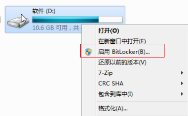
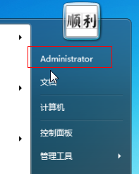
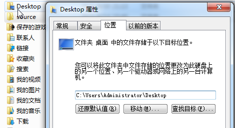
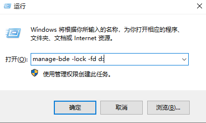

很多人都喜欢把资料，或下载的东西放在桌面，一方面占用系统盘空间，还有重装系统不拷贝就会丢失;
重要的是不安全，就算系统设置密码，用PE等工具还是可以查看拷贝这些文件
前提是除系统盘之外 还有别的磁盘，且支持 BitLocker 功能
一：给磁盘加密
- 打开计算机（Win + E） 选择系统盘之外的磁盘，用来保存重要资料、如 D盘（文档）
- 右击该磁盘，选择 启用BitLocker(B)..
 - 选择使用密码解锁，并输入牢记解锁密码，下一步
- 将恢复秘钥保存到文件或U盘（我保存到桌面然后删除）如果怕忘记密码的话可自己保存到其他位置
- 下一步，启动加密，等待加密完成即可！
同理可以给 U盘加密，U 盘插入其他电脑需要密码才能访问
如果忘记 Bitlooker 密码，可使用 刚保存的恢复秘钥恢复，如果秘钥删除，只能格式化磁盘了。
二：移动桌面
- 点击左下角开始菜单，打开个人文件夹 （系统盘C:\Users(用户)\Administrator）
 - 找到 Desktop 或桌面的文件夹，右击属性 - 打开位置选项
 - 点击移动，选择 启用了 BitLocker加密的磁盘，新建一个文件夹桌面（如 D:\桌面）
- 应用 确定即可
三：锁定
点击开始运行（Win+R） 输入 manage-bde -lock -fd d: 确定即锁定，再次刷新桌面文件无法查看
tips:命令里的 d: 是你 启用了 BitLocker加密的磁盘号 桌面所在磁盘号，如果是 E盘则输入 manage-bde -lock -fd e:

四：解锁
打开计算机，找到加密的磁盘，双击打开输入密码即可解锁，刷新查看桌面